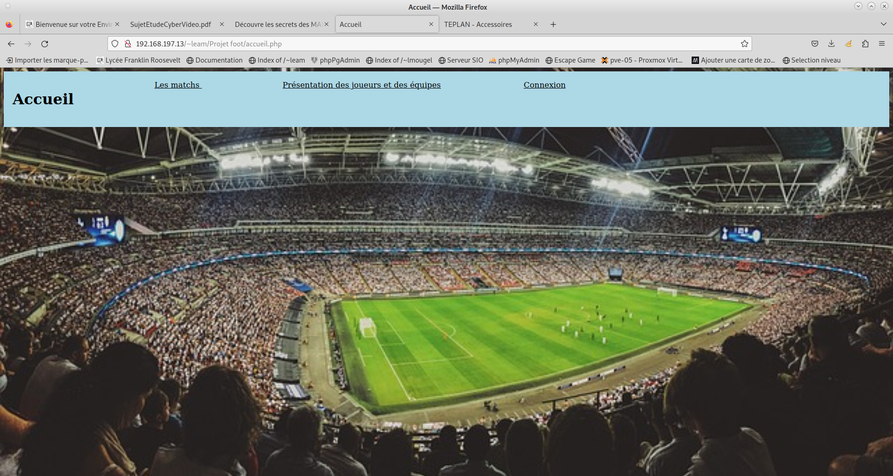
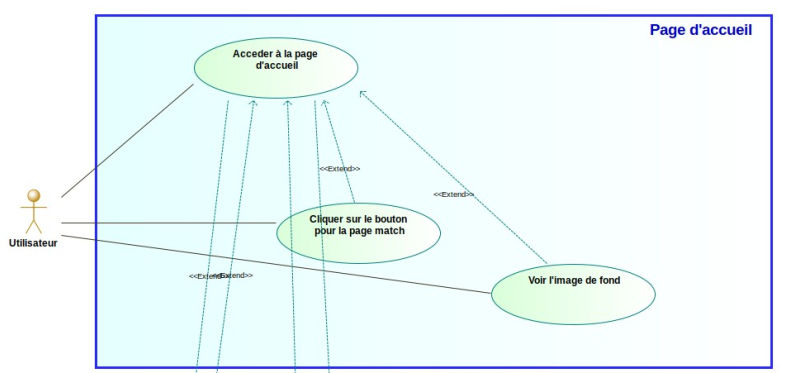
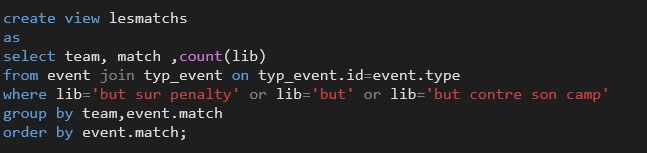

Championnat Foot

Ce projet présente les équipes et matchs du championnat de France de football 2016. Ce projet a été présenté à des collégiens afin de montrer ce que l'on fait dans notre formation.
Langages utilisés
HTML CSS JavaScript PHP SQL
Outils utilisés
BlueFish PhpPgAdmin
Compétences abordées
B1-1 : Gérer le patrimoine informatique
B1-2 : Répondre aux incidents et aux demandes d’assistance et d’évolution
B1-3 : Développer la présence en ligne de l’organisation
B1-4 : Travailler en mode projet
B1-5 : Mettre à disposition des utilisateurs un service informatique
B1-6 : Organiser son développement professionnel
Tâches
Documentation technique
Use Case
Analyse Prévisionnelle
Cahier Des Charges
Organisation en 3 sprints/étapes du projet

Site
Le projet a initialement été programé en html.
Il a ensuite été converti en PHP afin de lier une Base de données.
Base de données
La base de données contient les informations des joueurs,matchs,équipes récupérées depuis un fichier .CSV
et les informations de connexion de l'utilisateur.
